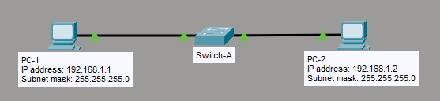

What I Learned
I created my first VLAN from scratch. Two computers connected to the same switch could ping each other after I assigned both switch ports to VLAN 50. The key insight: VLANs create logical network segments on a physical switch.
Before adding the ports to VLAN 50, the computers couldn't communicate even though they were on the same IP subnet. After the VLAN configuration, they could ping perfectly — same broadcast domain, isolated from other VLANs.
What is a VLAN?
VLAN (Virtual Local Area Network) is a logical grouping of devices within the same broadcast domain, regardless of their physical location. VLANs segment a network at Layer 2, improving security, performance, and management.
Why Use VLANs?
VLAN Benefits
- Security: Isolate sensitive data (Finance VLAN separate from Guest VLAN)
- Performance: Reduce broadcast traffic by limiting broadcast domains
- Flexibility: Group users by department, not physical location
- Cost Savings: No need for separate switches per department
Access Port vs Trunk Port
| Port Type | Purpose | VLANs Carried | VLAN Tagging |
|---|---|---|---|
| Access Port | Connect end devices (PCs, printers) | One VLAN only | Untagged |
| Trunk Port | Connect switches or routers | Multiple VLANs | Tagged (802.1Q) |
My Lab Topology
Simple setup: one switch, two computers, one VLAN. Both computers connect to Switch A on access ports assigned to VLAN 50.

Network Diagram
- Computer A → Switch A Fa0/1
- Computer B → Switch A Fa0/2
- Both ports in VLAN 50
Device Configuration
| Device | Interface | IP Address | Subnet Mask | VLAN |
|---|---|---|---|---|
| Computer A | NIC | 192.168.1.1 | 255.255.255.0 (/24) | 50 |
| Computer B | NIC | 192.168.1.2 | 255.255.255.0 (/24) | 50 |
| Switch A | Fa0/1 | — | — | 50 (Access) |
| Switch A | Fa0/2 | — | — | 50 (Access) |
Configuration Steps
Step 1 — Configure Switch A Hostname
enable
configure terminal
! Set switch hostname
hostname systech
! Exit back to privileged mode
exitStep 2 — Create VLAN 50
configure terminal
! Create VLAN 50
vlan 50
name systech
exitname command is optional but recommended. It helps identify the purpose of each VLAN when you run show vlan brief.
Step 3 — Assign Ports to VLAN 50
! Configure Fa0/1 (Computer A)
interface fastethernet0/1
switchport mode access
switchport access vlan 50
no shutdown
exit
! Configure Fa0/2 (Computer B)
interface fastethernet0/2
switchport mode access
switchport access vlan 50
no shutdown
exit
! Save configuration
end
write memoryStep 4 — Verify VLAN Configuration
! Show all VLANs
show vlan
! Show VLAN brief (cleaner output)
show vlan brief
! Verify specific interface switchport status
show interface fa0/1 switchport
show interface fa0/2 switchportUnderstanding show vlan Output
systech# show vlan brief
VLAN Name Status Ports
---- -------------------------------- --------- -------------------------------
1 default active Fa0/3, Fa0/4, Fa0/5, ...
50 systech active Fa0/1, Fa0/2
1002 fddi-default active
1003 token-ring-default active
1004 fddinet-default active
1005 trnet-default activeshow vlan brief and saw VLAN 50 listed with Fa0/1 and Fa0/2 assigned to it. Then I tested connectivity — Computer A could ping Computer B successfully at 192.168.1.2!
Step 5 — Test Connectivity
! Ping Computer B
ping 192.168.1.2
! Expected: Reply from 192.168.1.2
! This confirms both computers are in the same VLANOptional — Delete VLAN Configuration
! Delete VLAN database file
delete flash:vlan.dat
! Erase startup configuration
erase nvram
! Or delete specific VLAN
configure terminal
no vlan 50
exitdelete flash:vlan.dat removes ALL VLANs (except VLAN 1). Use no vlan 50 to remove only VLAN 50.
Key Takeaways
What I Understood
- VLANs create logical network segments on a physical switch
- Access ports carry traffic for only one VLAN (untagged)
- Devices in the same VLAN can communicate at Layer 2
- Devices in different VLANs cannot communicate without a router
- VLAN 1 is the default VLAN — all ports start in VLAN 1
switchport mode accessmakes a port an access portswitchport access vlan 50assigns the port to VLAN 50
VLAN Best Practices
| Practice | Why |
|---|---|
| Don't use VLAN 1 | VLAN 1 is default — security risk |
| Name your VLANs | Easier to identify purpose |
| Shutdown unused ports | Prevents unauthorized access |
| Use VLANs for departments | HR, Finance, IT separated logically |
Common Mistakes
- Forgot switchport mode access: Port stayed in dynamic mode and didn't assign to VLAN properly
- Created VLAN but didn't assign ports: VLAN existed but no ports were members
- Didn't save config: Lost VLAN after switch reboot — always
write memory